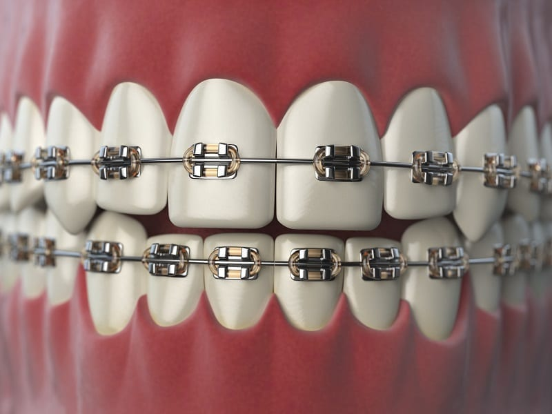

Planning for the cost of braces, or orthodontic treatment is something we often forget to take into consideration. With the increased popularity of orthodontic treatment, many parents have begun to expect this additional expense and are looking for ways to plan effectively and prepare for a treatment that will set the foundation for their child’s smile.
The American Association of Orthodontists recommends that kids begin seeing an orthodontist at age 7. These early exams are often complementary diagnoses conducted by a licensed professional that most often result in future observations until all permanent have erupted. Though if your orthodontist diagnoses skeletal issues, possible tooth impactions, or trauma to the teeth, they may prevent the need for expensive future surgeries or a lifetime of oral health issues with a short phase one treatment.
Based on your initial visit, I recommend starting to save as often as you are able. Being able to pay for the cost of braces upfront is ideal and often less stressful for parents or individuals. When that is not possible, payment plans may be available depending on the cost and need.
There are also many financing options that individuals can use to reduce the cost of braces, bringing what may seem like a high-ticket price down to reasonable monthly payments.
A lot of dental work and orthodontia can be paid for using Flexible Spending Accounts (FSA) or Health Savings Accounts (HSA) which provides additional flexibility in payment methods.
The cost of orthodontic treatment really varies depending on the complexity of the case. An initial limited Phase I treatment in adolescence to prevent future surgeries, extractions or trauma to the teeth may range between $1,000 and $3,500. The cost of teenage or adult orthodontic treatment may range between $5,000 - $10,000, depending on corrective work needed. With the median cost often ranging between $5,000 - $6,500. Orthodontic treatment is spread out over time, so financing options are available to make it more affordable. Your orthodontist will help to identify the best course of action for your specific needs and will work to utilize a cost-effective method.
Working with your health care provider and Patient Care Coordinator, you can ask about payment options and together work to identify the various options for corrective work. For more information about the cost of braces, or if you are ready to begin your journey to straighter teeth or would like to see an orthodontist for other needs or concerns request an appointment, and a member of our team would be happy to assist you.